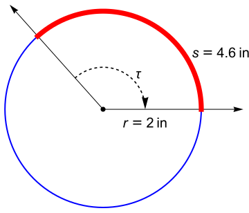
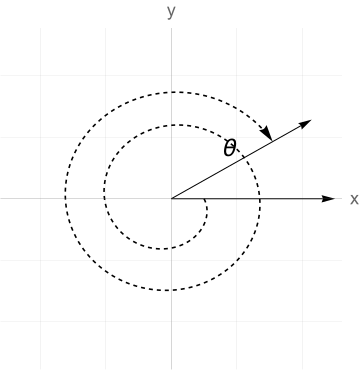
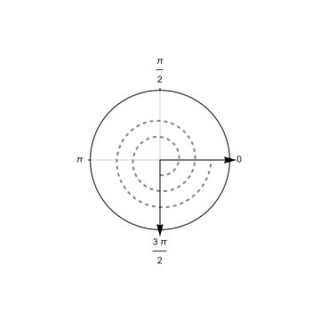

This section reviews the radian measure of an angle. A brief overview is provided in the video below.
An angle in the plane consists of a vertex, an initial ray, and a terminal ray which we think of being obtained by rotating the initial ray some amount about the vertex. (There can be quite a lot of rotation as the dashed arrow indicates above. This is useful for engineering situations where angles are describing a rotating object over time.) If the rotation is counter clockwise, we will say the angle is positive; if the rotation is clockwise, we say the angle is negative.
We’d like to measure the amount of rotation and hence the size of the angle with a real number typically denoted by a greek letter such as \(\theta\) (“theta”). The preferred approach for calculus is to draw a circle of radius \(r\) centered at the vertex of the angle and measure the arc-length \(s\)subtended by the angle, that is, the length of the curve that’s formed around the circle as the initial ray is rotated to form the terminal ray.
Definition9.1.Radian Measure of an Angle.
The radian measure of the positive angle above is the ratio of arc-length to the radius
If the angle is a negative angle, we will take the opposite sign for \(\theta\text{.}\)
Remark9.2.Angles are Dimensionless.
Observe that \(\theta\) is a ratio of lengths and therefore has no units. As such, angles are considered dimensionless quantities provided you are using the radian measure of the angle. This is one reason why using radians is the natural choice of measurement of angles in calculus and engineering.
Example9.3.Measuring an Angle in Radians.
In the figure below, I’ve drawn a positive angle with vertex at the center of a circle with a radius of 2 inches. I measure around the arc formed by the angle with a piece of string and find it to be \(4.6\) inches.
Note how the units of inches cancel leaving us with a quantity that has no physical units anymore. While it is perfectly appropriate to write \(\theta = 2.3\) without units, sometimes we might write
only to provide context for how the measurement was made.
If we let \(\tau\) (“tau”) be the same angle but with opposite rotation

then \(\tau = -2.3\) (radians).
Of course, you are likely more familiar with using degrees to measure angles in everyday life. For practical purposes, it’s important to be able to convert between the two. To start, an angle of \(360^\circ\) is one revolution. In a circle of radius \(r\text{,}\) one revolution will subtend an arc of length \(s = 2\pi r\text{.}\) Thus,
Usually we draw our angles on the \(xy\)-plane in standard position with the vertex at the origin and the initial ray along the positive \(x\)-axis. The following angle is in standard position. Its terminal ray is in the second quadrant so we refer to this as a Quadrant II angle.
The following figure illustrates angles in standard position and their quadrant.
Figure9.5.A Quadrant III angle.
Figure9.6.A Quadrant IV angle.
Figure9.7.A Quadrant I angle.
Example9.8.Sketching an Angle.
Consider \(\theta = 15\pi/4\) in standard position. We’d like to draw picture accurate enough to determine the quadrant of \(\theta\text{.}\) You should think of this as
Now, \(\pi/3 = 180^\circ /3 = 60^\circ\) and this divides a full rotation into six equal parts. Count of \(5\) in the clockwise orientation.
We conclude that \(\theta = -5\pi/3\) is a Quadrant I angle.
Example9.10.Sketching an Angle.
Draw the angle \(\theta = 13\pi/6\) in standard position and determine its quadrant.
Solution.
Observe that \(\pi/6\) divides one full rotation into 12 equal parts. Count out 13 of these in the counter-clockwise direction.
Thus, \(\theta = 13\pi/6\) is a Quadrant I angle.
Angles whose terminal sides coincide with a coordinate axis are called quadrantal angles and do not have a defined quadrant. For instance, \(\theta = \pi = 180^\circ\) is a quadrantal angle and so is half this amount \(\pi/2=90^\circ\text{.}\) In fact, the quadrantal angles are precisely the integer multiples of \(\pi/2\text{.}\)
Example9.11.Sketching Quadrantal Angles.
Sketch \(\theta = -810^\circ\) in standard position.
Sketching, we count two full clockwise revolutions and an extra quarter revolution. The result is a quadrantal angle.

Definition9.12.Coterminal Angles.
We say that two angles are coterminal if their terminal rays coincide when drawn in standard position.
Any angle is coterminal to infinitely many other angles, simply by adding or subtracting complete revolutions. However, it may be helpful to find the smallest positive or negative angle coterminal to a given angle as illustrated in the example below.
Example9.13.Finding Coterminal Angles.
Consider \(\theta = 15\pi/4\) from Example 9.8. Then \(\theta\) is coterminal to \(-\pi/4\) and this is the smallest such negative angle. The smallest positive angle coterminal to \(\theta\) is \(7\pi/4\text{.}\)